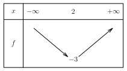
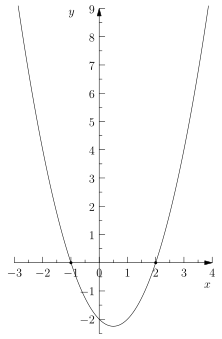
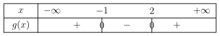
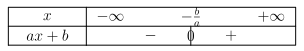
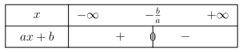
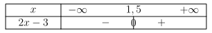
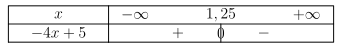
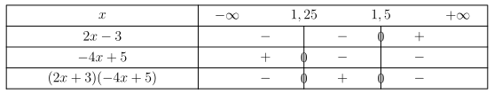
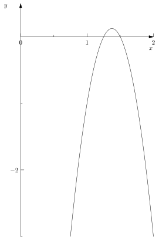

Tableaux De Signes
Table of Contents
1. Motivations
On a vu en classe comment construire des tableaux de variations de fonction définie sur un intervalle réel. Les tableaux de variations servent à
- Repérer les intervalles où la fonction croit, et les intervalles où la fonction décroît.
- Mettre en évidence les extremums (maximums, ou minimum)
Si on sait que le minimum de la fonction \(f : x \mapsto (x-2)^{2} - 3\) admet comme minimum \(-3\), c’est aussi parce que l’on peut construire son tableau de variations, pour obtenir le tableau suivant :

Les tableaux de signes pourront nous aider à
- Repérer les intervalles où la fonction est positive, et les intervalles ou la fonction est négative
- Mettre en évidence les nombres pour lesquels la fonction s’annule.
2. Définitions
On dit que \(f\) est positive sur \(I\) si pour tout \(x \in I\), on a \(f(x) \geq 0\).
On dit que \(f\) est négative sur \(I\) si pour tout \(x \in I\), on a \(f(x) \leq 0\).
Pour tout \(x \in \mathbb{R}\), la fonction \(f(x) = -x^{2} - 1\) est négative. On dit donc que la fonction \(f\) est négative sur \(\mathbb{R}\).
Pour tout \(x \in [0; +\infty]\), la fonction \(f(x) = x^{3}\) est positive. On dit donc que la fonction \(f\) est positive sur l’intervalle \([0; +\infty]\).
Soit \(f\) définie sur un intervalle \(I\) de \(\mathbb{R}\), à valeurs réelles. Un tableau de variations de \(f\) sur cet intervalle est un tableau qui récapitule les intervalles où la fonction est positive, ou négative.
Soit \(g\) fonction définie sur \(\mathbb{R}\) par \(g(x) = (x-2)(x+1)\). D’après le graphe de cette fonction (on verra comment faire algébriquement plus tard), on peut conjecturer que :
- La fonction \(g\) est positive sur l’intervalle \(]-\infty; -1]\)
- La fonction \(g\) est négative sur l’intervalle \([-1; 2]\)
- La fonction \(g\) est positive (de nouveau) sur l’intervalle \([2; + \infty[\)

On peut ainsi résumer ces informations dans un tableau de signes suivant :

3. Résumé des différences entre les tableaux de signes, et les tableaux de variations
| Tableaux de signes | Tableaux de variations | |
|---|---|---|
| Qu’est-ce que ça repère ? | Le signe des fonctions | Les variations de la fonction |
| Cela permet de détecter | Les solutions de \(f(x) = 0\) | Les extremums |
| Qu’est-ce qu’on met dans le tableau ? | Des \(+\) ou des \(-\) | Des flèches vers le haut, ou vers le bas |
4. Étude du signe des fonctions affines
4.1. Motivations
Les fonctions affines sont les fonctions qui sont à la fois pas évidente, et pas trop difficile à étudier. La plupart des fonctions en mathématiques ne sont pas évidentes à étudier. Mais étudier les fonctions affines permet de débloquer des techniques pour aborder des fonctions plus compliquées.
4.2. Théorie
Soit \(f\) une fonction affine définie sur \(\mathbb{R}\), avec \[ f(x) = ax + b \] avec \(a \in \mathbb{R}\) non nul le coefficient directeur de la fonction affine \(f\), et \(b \in \mathbb{R}\) l’ordonnée à l’origine.
On cherche à établir le tableau de signe de \(f\).
En résolvant l’équation \(f(x) = 0\), on peut déterminer le moment où la droite représentant la fonction \(f\) coupe l’axe des abscisses.
\begin{align*} f(x) &= 0 \\ ax + b &= 0\\ ax &= -b \\ x &= -\frac{b}{a} \end{align*}Donc, \(f(x) = 0\) si et seulement si \(x = -\frac{b}{a}\).
Ensuite, deux cas se présentent à nous.
- Soit \(a > 0\), et donc \(f\) est croissante, et donc la fonction est négative puis positive
- Soit \(a < 0\), et donc \(f\) est décroissante, et donc la fonction est positive puis négative.
Autrement dit :
4.2.1. Tableau de signes si \(a > 0\)

4.2.2. Tableau de signe si \(a < 0\)

4.3. Pratique
4.3.1. Cas d’un coefficient directeur positif
Si on veut étudier le signe de la fonction \(f(x) = 2x - 3\), on détermine d’abord la solution de \(f(x) = 0\). On trouve \(x = \frac{3}{2} = 1,5\).
Le coefficient de cette fonction est positif, donc le tableau de signe de cette fonction est donné par :

4.3.2. Cas d’un coefficient directeur négatif
Si on veut étudier le signe de la fonction \(g(x) = -4x +5\), on détermine d’abord la solution de \(g(x) = 0\). On trouve \(x = \frac{5}{4} =1,25\).
Le coefficient de cette fonction est négatif, donc le tableau de signe de cette fonction est donné par :

5. Étude du signe de produit de fonctions affines
5.1. Motivation
Si peu de fonctions en mathématiques sont strictement affine, on peut par contre plus souvent se retrouver avec des fonctions qui s’écrivent par exemple comme : \[ f(x) = (2x - 3)(-4x + 5) \] Ce ne sont pas des fonctions affines (si on développe, on fait apparaître des termes en \(x^{2}\)), mais pour étudier leur signe on peut utiliser les techniques déployées plus haut.
5.2. Étude d’un exemple
Soit \(f\) la fonction définie sur \(\mathbb{R}\) par \(f(x) = (2x - 3)(-4x + 5)\). On cherche à construire le tableau de signe de cette fonction. Pour cela, on étudie le signe des fonctions \(f_{1}(x) = 2x-3\), et \(f_{2}(x)=-4x + 5\). Cette étude a été faite dans les exemples plus haut, et on peut tout résumer dans un seul tableau :

Maintenant que l’on a découpé le travail, il suffit de se rappeler que :
- Le produit de deux facteurs de même signe est positif
- Le produit de deux facteurs de signe différent est négatif.
Donc, on peut résumer le signe de la fonction \(g\) sur \(\mathbb{R}\) par le tableau suivant :

Donc la fonction \(g\) est positive seulement sur l’intervalle \([1,25;1,5]\), et elle est négative ailleurs. On peut confirmer cela à l’aide du graphe de cette fonction :
